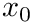

- Generated by
 1.14.0
1.14.0
|
NuMFor 6161170 (2025-12-22)
Numerical (Modern) Fortran. Library for Simple Numerical computing
|
for Gaussian random distributions More...
Data Types | |
| interface | rng_normal |
| Functions returning a variate x with normal probability. More... | |
| interface | rng_normal2 |
| Functions returning a variate x with normal probability. More... | |
| interface | random_standard_normal |
| Convenience routine. Fills a scalar or array with random numbers following a standard normal (gaussian) distribution. Equivalently to random_normal() with scale=1 and loc=0. More... | |
| interface | random_normal |
| Fills a scalar or array with random numbers following a normal (gaussian) distribution. More... | |
| interface | ran_gaussian_pdf |
| This function computes the probability density function (pdf) p(x) at x for a Gaussian distribution with standard deviation scale, using the formula given above. More... | |
Modules | |
| module | gauss |
| Normal random distribution The normal probability distribution located at  | |
Functions/Subroutines | |
| real(dp) function, public | ran_ugaussian2 () |
| Computes a Gaussian random variate, with mean zero and standard deviation sigma=1. | |
for Gaussian random distributions